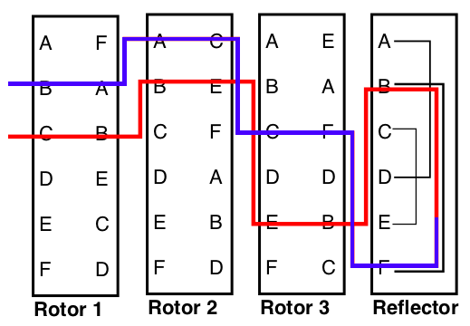

Nakreslil jsem zjednodušené schéma těch částí stroje, které se podílí na šifrování.

Ve volných chvílích jsem začal luštit sudoku. Čísla z něj pak používám pro vytvoření šablon. Je v tom určitá míra nostalgie když vím, jak vznikly.
Člověk by si myslel, že na relaxování si najdu něco méně náročného na myšlení, kterého mám plno v práci. Třeba tenis. To ale v zimě a ještě za války moc nejde.